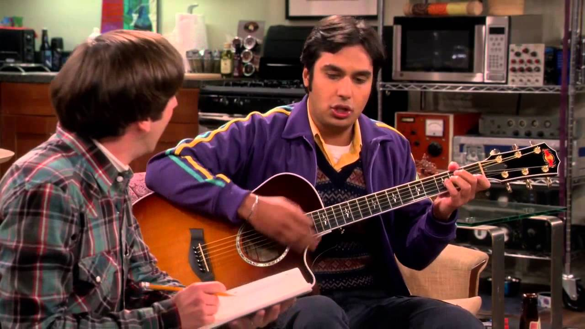

Footprints on the Moon is a “filk” band formed by Howard and Raj, playing sci-fi inspired folk music. The band now includes Bert Kibbler, who wrote a geology-inspired song about the boulder that chased Indian Jones. The band's song was “Hammer and Whip: The Untold Story of Thor vs. Indiana Jones”, about the Norse God and whip-carrying archaeologist. Their other songs include "Let's Get Astrophysical" and "Sherlock around the Clock". The band has performed at Stuart’s comic book store, as the house band on “Fun with Flags”, and has been hired to play bar-mitzvahs.
The band was formed in “The 2003 Approximation” when Stuart asked Howard and Raj if they knew any musicians who might perform at the show, ideally for free. Raj reminded Howard that they had always talked about performing together and they could play “filk” music, folk music with a sci-fi/fantasy theme.When Raj mentioned that they would need a cool band name, Howard said he’d been sitting on “Footprints on the Moon” for years. As Howard and Raj got together to write their first song, Raj brought up his idea of a “power ballad, superhero crossover tale of epic proportions” about Thor versus Indiana Jones. Howard began riffing on the theme and soon Raj contributed the hook, “Thor and Dr. Jones. Thor and Dr. Jones. One plays with lightning, the other plays with bones”The band almost broke up as soon as it began when Raj played their first song for his then-girlfriend, Emily, who didn’t like it as you couldn’t dance to it. When Raj brought up “his” concerns about the song, Howard sensed he was being influenced by his girlfriend and quit the band. Thankfully, Raj quickly ran back to Howard and the band went on to perform the song at Stuart’s comic book store, where Stuart’s only comment was “Play something we can dance to.”
After Raj created a Facebook page for the band in “The Earworm Reverberation”, Howard was initially annoyed that Raj had acted without consulting him. His concerns were erased when Raj revealed they already had a fan who had commented on their performance at the comic book store. Howard and Raj decided to write back to their supporter and they quickly became enchanted with their cool follower. When they decided to track him down in real life, they went to a coffee shop they knew he visited. Their excitement faded when they observed their fan doing something gross. As they tried to leave the shop without him realizing, he spotted them and asked if they were “Footprints on the Moon”. Howard and Raj said no and kept walking..